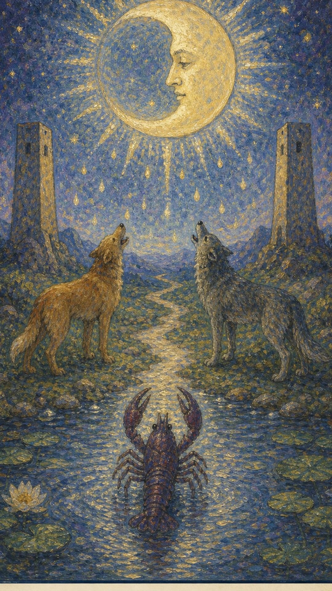

— 貳 · CORRESPONDENCES
对应要素Esoteric Correspondences
- 元素 Element
- 水潜意识、迷雾、恐惧、直觉
- 星座 / 行星
- 双鱼座潜意识、迷雾、恐惧、直觉
- 生命之树 Tree of Life
- Qoph路径与此牌的精神功课相连
- 希伯来字母
- Qoph（后脑）通过潜意识理解当前阶段的命运功课，在迷雾中学会信任直觉


月亮升得高高的，圆缺不定，照亮的是潜意识与想象力的世界。月亮上浮现出一张沉思的脸的剪影，似乎暗示着一种隐隐的不安。月亮的阴晴圆缺代表着变化，而它的光所照亮的，正是那个我们平日背向、充满未知与神秘的领域。它把梦境、恐惧与直觉一同映在水面，道路在夜色中延伸，清晰度有限，感受却格外敏锐。
← 返回大厅 / 选择其它卡牌月亮升得高高的，圆缺不定，照亮的是潜意识与想象力的世界。月亮上浮现出一张沉思的脸的剪影，似乎暗示着一种隐隐的不安。月亮的阴晴圆缺代表着变化，而它的光所照亮的，正是那个我们平日背向、充满未知与神秘的领域。它把梦境、恐惧与直觉一同映在水面，道路在夜色中延伸，清晰度有限，感受却格外敏锐。
当这张牌出现，说明你正遇到“潜意识、迷雾、恐惧、直觉”的课题。它既可能表现为外部事件，也可能是内心正在成熟的一个阶段。月亮牌的意象代表着潜意识的活动、事物的暧昧性，以及那些令人不安的隐秘信息。它也象征迷惑——越是幸福的时候，越担心不幸会降临；唯有破除这层迷惑，才能获得良好的结果。尽管这个领域看似可怕，却无需惊恐：在正确的环境下，月亮能激发灵感、展现魔力，它承诺，你所想象的一切都可能属于你。不过抽到月亮也不必过度紧张——即便它带来危险，也远不及高塔；很多所谓的危险只是迷惑，只是当事人过度紧张所放大的幻觉，归根结底仍有许多余地可以应对。
月亮之下，两只狗（或狼）抬头仰望、低声吠叫，似在同情月亮的愁苦，又似在向它询问什么。池中的螯虾对月宫充满向往，正努力爬出水面，沿着黄色弯曲的小路朝梦寐以求的地方前进。整个画面除月亮与螯虾外大致呈对称结构，一条蜿蜒的小路将其分开，被解读为人生理想与现实的两个层面，道路一直通向远方的山丘。大地代表意识，水代表无意识；为了实现梦想，螯虾必须在理想与现实之间徘徊前行，稍有偏差便难以达成。而那张充满愁苦与不安的脸，恰是螯虾前行路上内心的映照。
通过潜意识理解当前阶段的命运功课，在迷雾中学会信任直觉
月亮表示人事物的发展正处在中期阶段。正逆位的区别，在于能否度过这个中期：度过了，便能获得相应的奖励并进入后期；度不过，事情则就此中止。在月亮牌下，最常见的情况是传统所说的“有小人”，因此月亮最忌讳投资——没有人会在深夜提着一箱钱在外与人交易。此时其他的求问也一概不明朗，特别不适合做决策。当事人最好三思而后行；如果连思考都做不到，那么坐等也好过鲁莽行动。

月光下有狗、狼、双塔和从水中爬出的螯虾，道路通向远方。
这张牌的核心元素，与直觉、无意识和深层情感相连，也象征不确定与可能的欺骗。
月亮上那张脸显得困惑，强化了牌面的不确定与神秘感。
代表我们内在的野性本能与文明行为之间的对立。
从水中爬出的甲壳生物，代表潜意识的内容正逐渐浮现到意识层面。
两侧的城塔提供结构与界限，可能代表既定的社会结构或个人的心理边界。
前方的小溪象征情感的流动，以及涌向更大意识或集体意识的旅程。
中间的小路指引旅人前进的方向，象征个人的生命旅程与进步。
路径尽头的山代表遥远的目标与难以企及的高峰。
月亮明亮的一面与阴暗的一面，象征现实与幻觉、明确与暧昧。
蓝色常与治愈、宁静相关，在此也可能代表一段深邃的神秘之旅。
似雨滴的图案表示落下的决策或启示，可能来自直觉提供的洞察。
可能代表与月亮相关的不明朗或混乱状态。
象征自然界与生命途中的障碍。
对应此阶段在人生旅程中的功课。
数字 18 是 1 与 8 的组合，约化为 1+8=9（隐者）。它承接星星的希望之后，转入一段更幽深、更内省的夜路——光被收束，人必须凭借内在的直觉而非外在的清晰去摸索前行。18 指向经验累积后的转折与整合，引导人从事件表层进入更深的精神功课。
在解读时，月亮提醒我们：事件表面的顺逆终会变化，真正值得把握的是牌面所揭示的内在功课。月光下的世界并不可怕，可怕的是我们对未知的过度想象——学会分辨真实与幻觉，本身就是这张牌的修行。

正位的月亮表示这股能量正笼罩在一层迷雾之中。它的提示语是：直觉的增强、潜意识的力量、面对未知、揭示真相、梦境的提示、寻找内在的灵性、情感的波动、面对恐惧、神秘的力量、接受变化。顺着牌面主题去走，重要的不是急于看清眼前的混沌，而是先沉下心来，倾听直觉发出的微弱信号。
迷惘，直觉，梦境，隐藏，焦虑，暧昧，潜意识，幻想，谎言，不安，动摇，迷惑，暧昧不清，不确定，顾及两边，优柔寡断，受人感化，无法发挥潜能，错觉，害怕，畏惧，担忧，忧虑，渴望，重伤他人或为人中伤
水 · 潜意识、迷雾、恐惧、直觉
感情中，月亮代表关系进入与“潜意识、迷雾、恐惧、直觉”有关的阶段：暧昧不清的恋情、虚伪的感情、孽缘、三角恋，或为流言所困、遭遇背叛。它常意味着恋人之间存在不言明的情感与秘密，或一方对关系怀有不安全感，感情时而高涨时而低落，如同月的盈缺。单身者会被带有神秘气质的人吸引；有伴侣者则需要在看清真相之前保持耐心，围绕信任、边界与真实需求进行更成熟的沟通。
事业学业上，月亮提示你用更审慎的眼光处理问题，因为眼前充满了陷阱与不确定。它可能表现为被小人中伤、目标不明、遭遇欺骗，或事业看似有成却无法满足、成绩低迷、考试时心神不宁而失利。这张牌格外适合与夜生活、直觉相关的工作，但核心都是要求你警惕被自己的幻想误导。
人际关系中适合看清彼此真正的位置，减少表面的维持，并格外警惕暗处的中伤与误会。月亮正位常伴随私房钱暂缓财务危机、令人不安的经济状况、因被欺诈而损失钱财，或被恶言中伤、被人误会。财富方面要结合现实条件与长期影响，做出清醒的安排——此时尤其不宜轻信任何投资。
健康生活上，月亮提示身心状态与当前的心理课题紧密相连，尤其指向情绪、睡眠与潜意识层面。内心隐隐的不安、夜晚独处时的孤寂、过度的焦虑与多疑，都可能反映在身体上——熬夜、占卜、过度用脑，乃至海王星特质的爆发，都可能召唤出月亮的能量。适合检查情绪的来源与作息的节律，分辨身体的真实信号与被放大的恐惧，以更安稳的方式照顾自己。
内心隐隐感到不安，夜晚独处倍感孤寂。若问具体事件，正位多表示事情仍笼罩在迷雾里、尚未明朗。主动去理解它的意义、倾听直觉，会比在混沌中贸然行动更有力量。

逆位的月亮表示这股迷雾的能量开始消散，真相逐渐浮现。它的提示语是：混乱的感觉、恐惧的控制、误解的产生、意识的混淆、隐藏的真相、情绪的波动、迷茫的状态、逃避现实、不安的预感、否定自我。此时最重要的是先看清自己是否仍在抗拒这张牌所要求的功课——你或许正从一段混沌中走出，但也要分辨自己是真的看清了，还是只是换了一种逃避的方式。
真相浮现，误会解除，恐惧释放，逐渐清醒，直觉混乱，状况逐渐好转，疑虑渐消，排解恐惧，释放压力，镇定，秘密被揭示，混乱，欺骗，误解，拒绝直觉，幻觉，时间可以冲淡一切，幸免遇害，看不清
水 · 受阻、延迟、反复与失衡
感情中，逆位的月亮常意味着一段混淆与欺骗的结束、误会的澄清，时间正使两人的关系逐渐明朗。它也可能表示一个人在面对关系中的不安与误解之后，开始迈向更稳定的情感状态。但若仍有隐瞒，则容易因彼此不愿坦白而生出新的误会。关系若一直无法推进，需要回到双方真实的需求与坦诚的沟通。
事业学业上，逆位的月亮常表示境遇逐渐好转、检讨以往的过失、在瓶颈中苦研良策，默默的付出终将获得回报。但它也提示可能存在隐藏的问题与事业的不稳定，需要警惕被欺骗。先修正方向、补足信息，因时因地采取不同的办法，再决定下一步。
人际方面，逆位的月亮常表示财务危机得以解除、拮据期即将度过，以往的困惑渐渐消散，人际交往趋于顺利、冰释前嫌、逃离骗局。但仍要警惕信任危机与可能的欺骗行为。财富方面适合回到理性评估与长期规划，避免被恐惧推着走——现在仍不适合投资，把钱拿在手里才最稳妥。
健康上，逆位的月亮常提示一段混乱与不安的时期正在过去，情绪逐渐平复，恐惧得以排解、压力得到释放。但长期陷入的焦虑与多疑可能在心理上留下余痕，需要时间来恢复。建议减少极端的自我怀疑，给身心一个适应新清晰的缓冲期，重新建立规律而安稳的生活节奏——同时留意生活节奏是否过快、时间安排是否过于紧张。
时间安排过于紧张，生活节奏过快。事情可能在澄清的过程中暴露出此前隐藏的问题——先看清真相、修正模式，再谈结果。

当月亮出现在三牌阵中，它提示你从时间维度观察这股能量：过去留下的结构、现在显现的课题，以及未来需要整合的方向。点击下方卡牌揭示隐秘启示。
可能经历了混乱或欺骗的情况，使人感到困惑与不安，也可能指被压抑的情感与潜意识的影响。
可能正感受到混乱与不确定，努力理解自己的感觉与周遭发生的事；月亮鼓励你深入挖掘内心，面对隐藏的恐惧与愿望。
可能会揭示更多隐藏的信息与感情，需要面对一些深层真相，也警示即将到来的试炼，可能需应对欺骗或解决心理困扰。